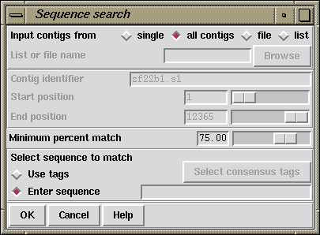

The purpose of this function (which is available from the gap5 View menu) is to find matches between the consensus sequence and short segments of sequence defined by the user. The segments of sequence (or "strings") can be typed into the dialogue provided or can be the sequences covered by consensus tag types (see section Tag types) selected by the user. The latter mode hence provides a way of checking to see if a tagged segment of the sequence occurs elsewhere in the consensus. The function was previously known as "Find Oligos".

Users can elect to search against a "single" contig, "all contigs", or a subset of contigs defined in a list (see section Lists) or a file. If "file" or "list" is selected the browse button is activated and gives access to file or list browsers. If they choose to analyse a single contig the dialogue concerned with selecting the contig and the region to search becomes activated.
Both strands of the consensus are scanned using a very simple algorithm: insertions and deletions are not allowed, but mismatches are. The "Minimum percent match" defines the smallest percentage match which will be reported by the algorithm. A value of 75 means that at least 75% of the bases must match the target sequence.
The user can elect to use tags or to specify their own sequences for the search. Selecting "Use tags" will activate the "Select tags" browse button. Clicking on this button will bring up a check box dialogue to enable the user to select the tags types they wish to activate. Alternatively selecting "Enter sequence" will activate a text entry box and the user can enter a string of characters. Only the characters ACGTU are allowed and there is no limit to the length of the string.
If it has not already occurred, selection of this function will automatically transform the Contig Selector into the Contig Comparator.
See section Contig Comparator. Each match found is plotted as a diagonal line in the Contig Comparator. The length of the diagonal line is proportional to the length of the search string. Self matches from the tag search are not reported.
If the match between the search string and the contig are in the same orientation, the diagonal match line will be parallel to the main diagonal, otherwise the line will be perpendicular to the main diagonal. Matches found between a tag and a contig can be used to invoke the Join Editor (see section The Join Editor) or Contig Editors (see section Editing in gap5). Matches between a specified sequence and a contig will only invoke the Contig Editor. All of the matches found are displayed in the Output Window e.g.
Match found between tag on contig 315 in the + sense and contig 495
Percentage mismatch 16.7
957 967 977 987 997
315 CATAAGGATTTCCAATATTTTATTCCAGTTGGGCATCCTAGT
:: ::::::::::: :::::::::::::::::: ::::
495 GATTGGGATTTCCAATGTTTTATTCCAGTTGGGCACCCTAAG
2 12 22 32 42